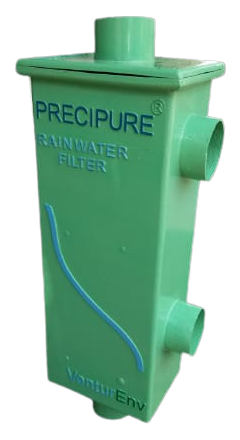

<section id="precipure-rainwater-recharge-system" class="project-implementation section-header">
  <div class="container text-start" data-aos="fade-up">

    <div class="row gy-4" data-aos="fade-up">
      <div class="col-lg-12">
        <div class="content ps-lg-5">
          <h2 class="text-center">Wall-Mountable Pre-Storage Rainwater Filter </h2>
          <br>
          <div class="container">
            <div class="row">
              <div class="col">
                <ul>
                  <li><i class="bi bi-check-circle-fill"></i>Compact design ensures installation in very less space</li>
                  <li><i class="bi bi-check-circle-fill"></i>Filter element is 150 & 600 micron SS304/LCG removable V-Wire screen with unique non-clogging continuous slot design</li>
                  <li><i class="bi bi-check-circle-fill"></i>Filter media is 300-500 micron graded & washed silica sand free of organic impurities which adds extra filtration efficiency as compared to normal filters</li>
                  <li><i class="bi bi-check-circle-fill"></i>Coupled with a first flush system to effectively remove physical impurities from rainwater so as to reduce silt load on filter element and media, thus improving its efficiency</li>
                  <li><i class="bi bi-check-circle-fill"></i>Can be installed easily & quickly by plumber</li>
                  <li><i class="bi bi-check-circle-fill"></i>Easy, less frequent and no cost maintenance – can be conveniently done by user</li>
                  <li><i class="bi bi-check-circle-fill"></i>Can be disassembled and reassembled, if required, to change location or for maintenance</li>
                  <li><i class="bi bi-check-circle-fill"></i>Variants available as per customer’s specific requirement and budget</li>
                  
                </ul>
              </div>
              <div class="col-md-4">
                
              </div>
            </div>
          </div>
        </div>
      </div>
    </div>

  </div>
</section>